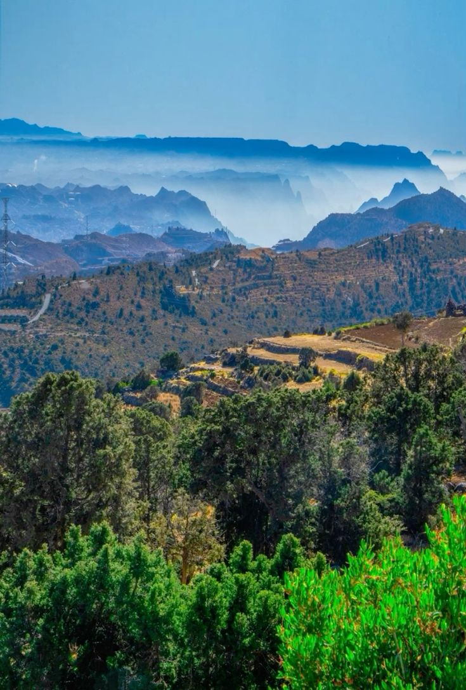
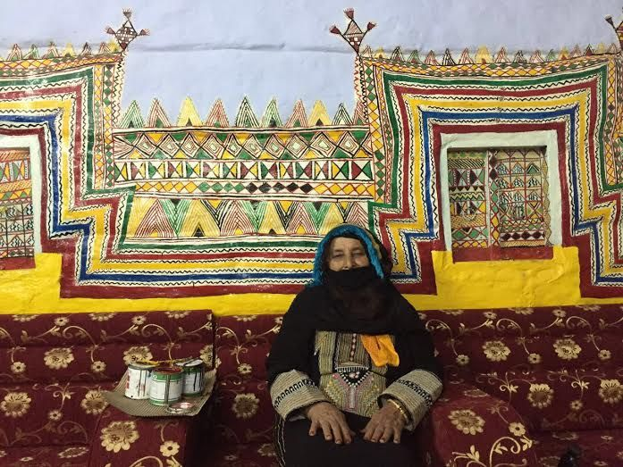
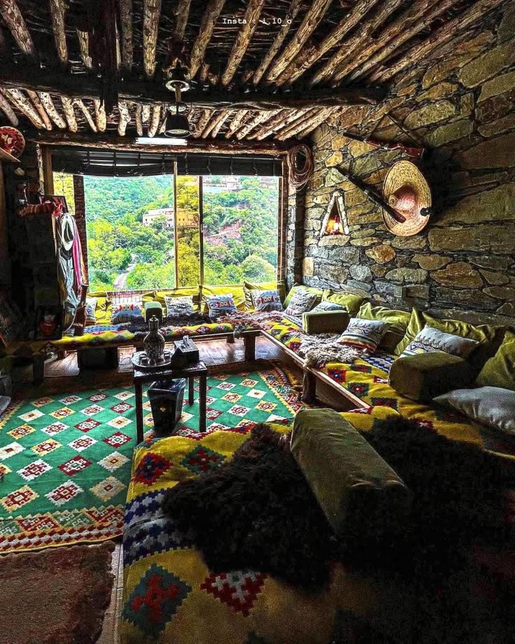
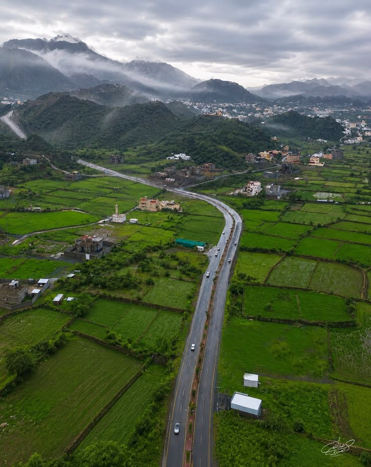

نبذة عن المنطقة
بين الغيوم وحكايات المكان
يساعدك Asir Guide على اكتشاف طبيعة عسير وقراها وتراثها ومذاقاتها المحلية وأنشطتها، خطوةً بخطوة.
اختر ما يناسب إيقاع رحلتك الهادئة، ثم انتقل إلى تفاصيل كل تجربة.
جرّب عسير
استكشف الأنشطة والفعاليات في عسير
استكشف المتنزهات والمواقع الطبيعية ومسارات الهايكنج والفعاليات والتجارب، مع مرافق مقترحة وروابط مباشرة إلى خرائط Google لتخطيط زيارتك.
- متنزهات ومواقع طبيعية
- هايكنج ومسارات مشي
- فعاليات وتجارب
- خطط رحلتك
اختر المنطقة لعرض المتنزهات والفعاليات
دليل المنطقة
خطّط بهدوء
اختر جدولك بنفسك
أضف أي بطاقة من الأقسام أدناه لتظهر اختياراتك هنا.
اقتراح سريع
اختيار عشوائي
اختر بطاقة عشوائية من هذه المنطقة فقط.
ملفات تعريف للعرض
ابحث عن مرشد سياحي
اختر مرشدًا مناسبًا لطابع رحلتك، وسيظهر اختيارك داخل جدول الرحلة الحالي.
الأسماء والصور التالية ملفات تعريف تجريبية للعرض فقط وليست قائمة مرشدين حقيقية.
المرشد التجريبي ١
- نوع التجربة
- نزهات طبيعية هادئة
- المنطقة المغطاة
- أبها والسودة
مرشد محدد
المرشد التجريبي ٢
- نوع التجربة
- حكايات المكان والأسواق
- المنطقة المغطاة
- تنومة والنماص
مرشد محدد
المرشد التجريبي ٣
- نوع التجربة
- تفاصيل القرية والتراث
- المنطقة المغطاة
- رجال ألمع
مرشد محدد
خطط براحة
الفنادق والسكن والمذاقات القريبة
اختر منطقتك أولًا للبحث عن السكن، ثم استكشف اقتراحات المقاهي والمطاعم القريبة.
اختر المنطقة
السكن في
اختر المنطقة
اقتراحات قريبة من
اقتراح سريع
فاجئني
اختر اقتراحًا عشوائيًا من المنطقة والتصنيف الحاليين.
ذاكرة بصرية
مشاهد من عسير
صور توضيحية مؤقتة تعبّر عن أنواع المشاهد التي يمكن استبدالها بصور محلية مرخّصة لاحقًا.




قبل أن تنطلق
دع الرحلة تبدأ بسؤال جيد
استخدم هذا الدليل كبداية، ثم تحقق من المواعيد ووسائل التنقل والخدمات المتاحة محليًا قبل زيارة أي مكان.
أفضل الرحلات تترك مساحة للاكتشاف.
العودة للبداية